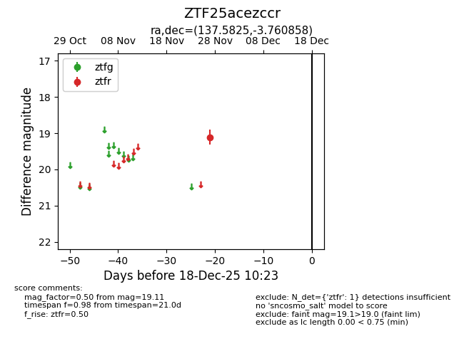
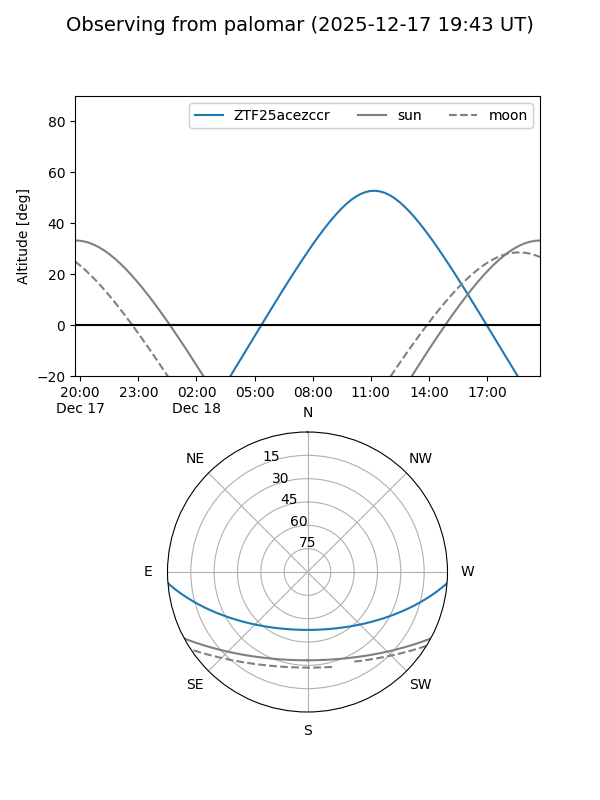

ZTF25acezccr
Target ZTF25acezccr at 2025-12-18 11:17
Aliases and brokers:
FINK: fink-portal.org/ZTF25acezccr
Lasair: lasair-ztf.lsst.ac.uk/objects/ZTF25acezccr
ALeRCE: alerce.online/object/ZTF25acezccr
alt names
ZTF25acezccr (ztf,fink_ztf)
Coordinates:
equatorial (ra, dec) = 137.5825,-3.76086
equatorial (HMS+DMS) = 09:10:19.79,-03:45:39.09
galactic (l, b) = (234.0977,+28.42087)
Photometry
last ztfr=19.11
1 ztfr detections
Lightcurve

Visibility


Additional plots